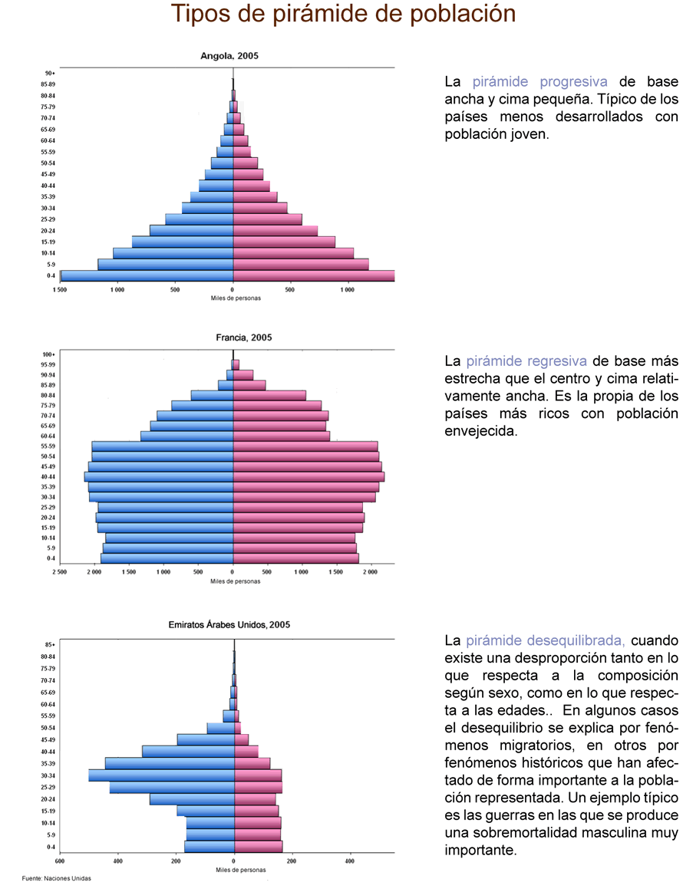
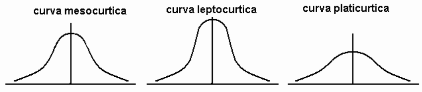
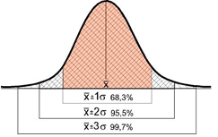

Investigación Cuantitativa
Introducción a la Metodología Científica — Máster Universitario en Neurociencias Básicas, Aplicadas y Dolor
Dpto. Estadística e Investigación Operativa, Universidad de Granada
2026-10-10
Investigación Cuantitativa
Máster Universitario en Neurociencias Básicas, Aplicadas y Dolor
Introducción a la Metodología Científica
Nota
Material docente de Miguel Angel Luque-Fernández (Dpto. Estadística e I.O., UGR · mluquefe@ugr.es · migariane.github.io · maluque.netlify.app). La estructura y el enfoque didáctico del curso toman como referencia la asignatura de Metodología Científica del Máster en Neurociencias Básicas, Aplicadas y Dolor (UGR), impartida originalmente por J. L. Romero-Béjar (2022).
Granada, 2026-10-10
Índice
- 1 Demografía sanitaria
- Aspectos conceptuales
- Indicadores demográficos y de salud
- Calidad de vida relacionada con la salud (CVRS)
- 2 Fundamentos de la investigación cuantitativa
- Preliminares
- Estadística descriptiva
- Muestreo
- Probabilidad
- Estadística inferencial
- 3 Epidemiología
- Preliminares
- Tipos de estudios epidemiológicos
- 4 Supuesto práctico
Índice — Demografía sanitaria
- 1 Demografía sanitaria
- Aspectos conceptuales
- Indicadores demográficos y de salud
- Calidad de vida relacionada con la salud (CVRS)
- 2 Fundamentos de la investigación cuantitativa
- Preliminares
- Estadística descriptiva
- Muestreo
- Probabilidad
- Estadística inferencial
- 3 Epidemiología
- Preliminares
- Tipos de estudios epidemiológicos
- 4 Supuesto práctico
Demografía
Estudio estadístico de las poblaciones humanas según su estado y distribución en un momento determinado o según su evolución histórica.
Fuentes demográficas
Las fuentes demográficas son aquellos documentos que nos proporcionan información sobre la población. Acudimos a unas u otras dependiendo del tipo de demografía que vamos a estudiar.
Tipos de demografía
- Estática: estudia la población en un momento determinado. Fuentes demográficas estáticas son el Censo (nacional cada 10 años) y el Padrón (municipal cada 5 años). Es la base para la elaboración de pirámides poblacionales.
- Dinámica: estudia los cambios que ocurren en una población a lo largo del tiempo y las causas que los provocan (movimientos migratorios, natalidad-mortalidad, etc.). Fuentes demográficas dinámicas son el Registro Civil o encuestas que se realizan a la población para obtener información sobre datos específicos como por ejemplo las encuestas de población activa.
Índices demográficos
Resumen las características de la población con respecto a determinadas variables.
- Índice de composición por edad: se divide a la población en subgrupos de edad y se compara el volumen incluido en cada uno.
- Índice de composición por sexo: se analiza la razón de varones frente a mujeres (varones/mujeres).
- Índice de actividad económica: analiza la tasa de paro en la población >16 años.
Pirámide poblacional
Es usual representar los distintos índices demográficos en una gráfica en forma de pirámide.

Pirámide poblacional
Indicadores demográficos y de salud
Según el INE, los indicadores demográficos básicos son natalidad, fecundidad, mortalidad, crecimiento y estructura, nupcialidad y migraciones.
Indicadores de natalidad
- Tasa de natalidad (TN): \[TN = \frac{\text{Nacidos vivos en 1 año}}{\text{Población total media}} \times 1000\]
- Tasa de fecundidad general (TGF): \[TGF = \frac{\text{Nacidos vivos en 1 año}}{\text{Población femenina fértil (15--49)}} \times 1000\]
- Índice sintético de fecundidad: promedio de hijos por mujer al cumplir 50 años. Recambio generacional \(\approx 2.1\).
Indicadores de mortalidad
Tasa bruta de mortalidad (TBM) — no comparable entre poblaciones: \[TBM = \frac{\text{Total de muertes en 1 año}}{\text{Población total media}} \times 1000\]
Índice de Swaroop-Uemura (IS) — sí comparable; \(100\%\) = máxima calidad de vida: \[IS = \frac{\text{Muertes en }>50\text{ años}}{\text{Muertes totales}} \times 100\]
Esperanza de vida: promedio de años por vivir (difícil de medir).
Mortalidad infantil (OMS — mejor indicador sanitario): \[TM_{inf} = \frac{\text{Muertes en }<1\text{ año}}{\text{Nacidos vivos}} \times 1000\]
Crecimiento natural (vegetativo): nacimientos \(-\) defunciones.
Indicadores de salud
Son variables que reflejan el estado de salud de una comunidad y que pueden ser medidos directamente. Son sensibles a más de una situación o fenómeno. Por ejemplo la tasa de mortalidad infantil describe el estado de salud de la población infantil así como el bienestar global de una población.
Algunos indicadores de salud son: 1. Esperanza de vida 2. Mortalidad 3. Morbilidad 4. Limitación de actividad y salud subjetiva 5. Salud materno infantil 6. Hábitos y estilo de vida relacionados con la salud
Indicadores de morbilidad
Indicadores de morbilidad — individuos enfermos en un periodo y espacio concretos.
- Índice epidémico (declaración obligatoria): casos semanales / casos esperados. \(>1.25\) \(\rightarrow\) altamente infecciosa.
- Registros de cáncer
- Encuestas de morbilidad hospitalaria
- Encuestas de salud
- Tasa de letalidad (virulencia): \[TL = \frac{\text{Fallecidos por la enfermedad en 1 año}}{\text{Nº casos en el mismo año}} \times 1000\]
Prevalencia e incidencia
Prevalencia — casos existentes en un momento concreto: \[\text{Prevalencia} = \frac{\text{nº casos existentes}}{\text{población total}} \in [0,1]\]
Probabilidad de estar enfermo en ese momento.
Incidencia acumulada — casos nuevos en un periodo y lugar: \[\text{Incidencia acumulada} = \frac{\text{nº casos nuevos}}{\text{población total}} \in [0,1]\]
Relación: \[\text{Prevalencia} \approx \text{Tasa de incidencia} \times \text{duración}\]
Tasa de incidencia: tiene en cuenta el tiempo de permanencia en el estudio.
Definición
La OMS define la calidad de vida como la percepción del individuo de su posición en la vida en el contexto de la cultura y sistema de valores en los que vive y en relación a sus objetivos, expectativas, estándares y preocupaciones (1994).
- La importancia de Calidad de Vida Relacionada con la Salud (CVRS) es que supone situar al paciente en el centro del sistema al tener en cuenta su percepción en relación al proceso de enfermedad, etc.
- No hay una medida objetiva de la CVRS pues depende de la visión subjetiva del individuo considerada de forma aislada.
Análisis de datos
La demografía utiliza el método científico para elaborar hipótesis, establece unos comportamientos poblacionales y en base a ellos elabora políticas de actuación.
Partiendo del análisis estadístico de los datos obtenidos por medio de las distintas fuentes demográficas se pueden:
- Elaborar tablas y otros indicadores sanitarios
- Realizar estudios epidemiológicos
- Planificar y programar en salud pública
Las relaciones estadísticas más utilizadas son:
- Proporciones y porcentajes
- Tasas (son proporciones que además incluyen el factor tiempo)
- Razón (cociente de dos frecuencias absolutas)
- Índice (cociente entre individuos portadores de una variable entre los individuos restantes)
Fuentes del conocimiento
Método científico. Es el método más avanzado para la adquisición de conocimientos. Se apoya en la evidencia empírica, la inducción y la deducción.
Etapas del método científico:
- Observación
- Formulación de preguntas y elaboración de hipótesis
- Contraste de las hipótesis (diseño del estudio y obtención de datos)
- Análisis de los datos
- Conclusiones
Otras fuentes del conocimiento. Son la tradición, el razonamiento lógico, la experiencia personal, el saber de expertos en un tema, el proceso ensayo-error, etc. Son fuentes no metódicas ni sistemáticas, al contrario de lo que le ocurre al método científico.
El paradigma cuantitativo en investigación en Ciencias de la Salud
La investigación cuantitativa describe, verifica relaciones entre variables y examina los cambios observados en la variable respuesta en función de la/s variable/s independiente/s.
- Su principal característica es la objetividad.
- La epidemiología, por ejemplo, aplica las premisas de la investigación cuantitativa.
Estadística descriptiva e inferencial
La estadística es la parte de las Matemáticas que se encarga del estudio de una determinada característica en una población, recogiendo los datos, organizándolos en tablas, representándolos gráficamente y analizándolos para sacar conclusiones de dicha población.
- Estadística descriptiva (o deductiva). Se encarga de la síntesis de la información obtenida por el investigador, mediante medidas obtenidas a partir de los datos observados (media, mediana, cuartiles, varianza, etc.), y de la representación gráfica de los mismos (histogramas, pictogramas, diagramas circulares, etc.).
- Estadística inferencial (o inferencia estadística). Trata de extrapolar los resultados obtenidos en un grupo al total de la población. Por ejemplo, si en Granada la proporción de rubios con ojos azules es del 20 %, ¿podré decir lo mismo de toda la población de España?, ¿qué podré decir de esta proporción a nivel global?
Conceptos básicos
Población. Es el conjunto total de individuos, generalmente inaccesibles en su totalidad, sobre los que nos interesa dar las conclusiones de nuestro estudio.
Muestra. Es una extracción reducida de individuos de la población, totalmente accesibles, sobre el que haremos el estudio y a partir de cuyas conclusiones trataremos de concluir sobre el total de la población.
Variables. Es cada uno de los caracteres o aspectos que estudiaremos en los individuos de una muestra.
Parámetro. Son valores que resumen una determinada información de la población, nunca se podrán calcular de forma exacta, se estimarán a partir de muestras. (Ejm.: µ = media de la población).
Estadístico. Son los valores que resumen una determinada información de la muestra, siempre se podrán calcular de forma exacta y nos ayudarán a estimar el mismo valor en la población. (Ejm.: X̄ = media de la muestra).
Variables estadísticas
Son los diferentes valores que puede tomar la característica que queremos medir en una muestra. Pueden ser aleatorias y pueden tomar valores dentro de un rango de medida y escala mediante una función. (Ejm.: El resultado del lanzamiento de un dado es una variable aleatoria que toma valores del 1 al 6).
- Variables cuantitativas. Miden cantidades. Se dividen en continuas, cuando entre dos valores consecutivos podemos encontrar infinitos nuevos valores (talla, peso, etc.) o discretas, cuando solo toma valores enteros (nº de hijos, nº de mascotas, edad en años, etc.).
- Variables cualitativas. Miden una cualidad o atributo no cuantificable. Si solo toman dos valores se denominan dicotómicas (Ejemplo: el sexo categorizado en hombre o mujer). Este tipo de variables son las variables de respuesta habituales en estudios clínicos o epidemiológicos (Diagnóstico enfermo o sano).
Tipos de escala
Según la escala de medida utilizada para agrupar las categorías o valores de una variable distinguimos entre escalas cualitativas (ordinal y nominal) y escalas cuantitativas (razón e intervalo).
- Escala nominal. Las categorías o grupos de la variable son excluyentes entre sí. (Sexo: la escala es hombre o mujer).
- Escala ordinal. Las categorías o grupos de la variable siguen un orden creciente o decreciente. (Gravedad de una lesión: la escala podría ser leve-moderada-severa).
- Escala de intervalo. Existe un orden numérico y la diferencia entre dos valores es siempre la misma. Esta escala no se inicia en el 0 absoluto. (Temperatura: toma valores numéricos ordenados).
- Escala de razón o proporción. Tiene las mismas características que la escala de intervalo, pero se inicia en cero, significando en tal caso ausencia de la característica que se mide. (Peso o Talla). Establece cuántas veces es mayor una modalidad con respecto a otra.
Estadística descriptiva en variables cuantitativas
La descripción de resultados de una variable cuantitativa se realiza con medidas de tendencia central, de dispersión, de posición y/o de forma.
- Tendencia central
- Media aritmética
- Media geométrica
- Mediana
- Moda
- Dispersión
- Amplitud o rango
- Varianza y desviación típica o estándar
- Cociente de variación
- Posición
- Percentiles, deciles, cuartiles, quintiles, …
- Forma
- Simetría-Asimetría
- Apuntamiento
Medidas de tendencia central
Definen los valores de la variable en torno a los cuales tienden a concentrarse las observaciones.
Media
- Es la medida de centralización más conocida y utilizada. Se calcula sumando todos los valores observados y dividiendo por el número de observaciones de la muestra. Se denota como X̄ .
- Su principal ventaja es su fácil manejo matemático y estadístico.
- Tiene la desventaja de ser muy sensible a valores extremos en una muestra que no tenga una distribución normal.
- Ejemplo: Analizamos los días de estancia hospitalaria de los 7 últimos trasplantados renales en nuestro Servicio, obteniendo: 3, 3, 4, 7, 9, 11, 12 días de estancia.
- Solución: La estancia media de los pacientes es de 7 días. Pero si en lugar de 12 días el último paciente permanece ingresado 89, la nueva media sería 18 días, muy alejada de la anterior. Esto se debe a que un valor extremo, 89, muy distante del resto, influye negativamente en la media.
Media geométrica
Se utiliza para datos exponenciales o del tipo de crecimiento de poblaciones. Se calcula multiplicando los datos entre sí y aplicando después la raíz de orden n. Se utiliza con mucha menor frecuencia que la media aritmética, aunque es muy utilizada en microbiología y serología.
- Ejemplo: Analizamos los días de estancia hospitalaria de los 7 últimos trasplantados renales en nuestro Servicio, y tenemos: 3, 3, 4, 7, 9, 11, 12 días de estancia.
\[\bar{G} = \sqrt[7]{3\times3\times4\times7\times9\times11\times12} \approx 6.06\]
Mediana
- La mediana es el valor que, una vez ordenados los datos, divide la distribución en dos partes iguales. Es útil en variables cualitativas ordinales, en las que es imposible calcular la media aritmética.
- ¿Cómo se calcula? Si n es par, la mediana es la media de los dos valores centrales. Si n es impar, la mediana es el valor central.
- Ejemplo: Analizamos los días de estancia hospitalaria de los 7 últimos trasplantados renales en nuestro Servicio, obteniendo: 3, 3, 4, 7, 9, 11, 12 días de estancia.
- Solución: Hay un número impar de datos por lo que la mediana es el valor central, en este caso 7. Si cambiamos el último dato por 89, la mediana sigue siendo el valor 7, de modo que, la mediana es mucho menos sensible a los valores extremos que la media.
Moda
La moda es el valor que se observa con más frecuencia, el más repetido. Si no se repite ningún valor, la muestra no tiene moda, es amodal. Si se repiten varios valores diferentes, puede ser bimodal, trimodal o multimodal.
- Ejemplo: Analizamos los días de estancia hospitalaria de los 7 últimos trasplantados renales en nuestro Servicio, obteniendo: 3, 3, 4, 7, 9, 11, 12 días. El valor más repetido es el 3 que aparece dos veces, así que la moda es 3. Esto indica, en este caso, que lo más habitual es que los pacientes pasen 3 días de estancia hospitalaria tras el trasplante.
Comparación de las medidas de centralización
- La media utiliza todos los datos y por tanto es preferible si la muestra es homogénea o simétrica, pero es muy sensible a valores extremos.
- La mediana utiliza menos información que la media ya que tan sólo tiene en cuenta el orden de los datos, pero como ventaja no es sensible a valores extremos, por lo que es muy útil en distribuciones asimétricas.
Medidas de dispersión
Nos informan sobre la variabilidad de la muestra, normalmente respecto a su media.
Recorrido o rango
- Es la diferencia entre el valor máximo y mínimo de la variable.
- Su principal ventaja es que se calcula con gran facilidad.
- Pero su principal desventaja es que dado que no tiene en cuenta los valores intermedios, su utilidad es muy limitada.
- Es útil como media de dispersión en las variables cualitativas ordinales, o para indicar si nuestros datos tienen algunos valores extraordinarios.
- Ejemplo: Analizamos los días de estancia hospitalaria de los 7 últimos trasplantados renales en nuestro Servicio, obteniendo: 3, 3, 4, 7, 9, 11, 12 días de estancia. El rango es 12 − 3 = 9.
Varianza y desviación típica
\[S^2 = \frac{1}{n-1}\sum_{i=1}^{n}(x_i-\bar X)^2 \qquad S = \sqrt{S^2}\] Varianza grande → dispersión alta; pequeña → concentración. \(S\) devuelve las unidades originales.
- Ejemplo: estancias 3, 3, 4, 7, 9, 11, 12 días, \(\bar X=7\).
\[\sum (x_i-\bar X)^2 = 16+16+9+0+4+16+25=86 \;\Rightarrow\; S^2=\frac{86}{6}=14.33,\; S=3.79\]
Coeficiente de variación
Compara la variabilidad relativa de diferentes muestras.
Se usa con frecuencia para comparar métodos de medida. Es un valor adimensional. Se calcula dividiendo la desviación estándar entre la media, multiplicando después por 100. Se denota por Cv. Si comparamos dos variables, estará más agrupada, menos dispersa, aquella que tenga coeficiente de variación menor.
Ejemplo: Analizamos los días de estancia hospitalaria de los 7 últimos trasplantados renales: 3, 3, 4, 7, 9, 11, 12 días. Media \(\bar X=7\), \(S=3.79\).
\[C_v = \frac{S}{\bar X}\times 100 = \frac{3.79}{7}\times 100 = 54.1\%\] La variabilidad relativa respecto a la media es del 54%.
Medidas de posición
Percentiles. Son 99 valores que dividen la variable en 100 partes iguales, cada una conteniendo el 1% de los datos.
- El percentil 10, deja debajo de sí el 10% de los datos y por encima el 90%
- El percentil 33, deja debajo de sí el 33% de los datos y por encima el 67%
- El percentil 50 es la mediana
Deciles. Son 9 valores que dividen la variable en 10 partes iguales, cada una conteniendo el 10% de los datos.
Cuartiles. Son 3 valores que dividen la variable en 4 partes iguales, cada una conteniendo el 25% de los datos.
Quintiles. Son 4 valores que dividen la variable en 5 partes iguales, cada una conteniendo el 20% de los datos.
Medidas de forma
Son medidas que nos dan una idea de la forma en la que se agrupan los valores de la variable.
- Simetría y asimetría.
- Una distribución es simétrica cuando coinciden la moda, la mediana y la media en el mismo punto, el sesgo es 0. Si esto no pasa se habla de asimetría o sesgo no cero. Si los valores se agrupan más a la izquierda hablamos de asimetría positiva, si lo hacen a la derecha hablamos de asimetría negativa.
- La medida utilizada habitualmente es el coeficiente de asimetría, As, que se calcula como el triple de la diferencia entre la media y la mediana, dividido por la desviación estándar.
- As = 0, variable simétrica.
- As > 0, variable asimétrica positiva.
- As < 0, variable asimétrica negativa.
- Apuntamiento. Hace referencia a si la distribución es ancha y plana (platicúrtica), puntiaguda y estrecha (leptocúrtica) o similar a la normal (mesiocúrtica), siempre comparando con la distribución normal que después estudiaremos.

Simetría y asimetría
Tablas de frecuencias
Frecuencias absolutas. Contabilizan el número de individuos de cada modalidad.
- Frecuencias relativas. Proporción de individuos de cada modalidad. Es la frecuencia absoluta dividida por el total de individuos.
- Frecuencias acumuladas. Sólo tienen sentido para variables ordinales y numéricas.
Medidas de frecuencia
- Razón. Es todo índice obtenido al dividir dos cantidades.
- Proporción. Toda razón cuyo numerador esté incluido en el denominador.
- ODDS. Cociente entre la proporción o probabilidad de ocurrencia de un evento y la proporción o probabilidad de no ocurrencia.
- Tasa. Razón de cambio de dos magnitudes.
Tipos de muestreo
Muestreo no aleatorio
- Elección interesada, sin azar.
Muestreo aleatorio
- Incorpora el azar como recurso.
Muestreo probabilístico
- Es un muestreo aleatorio en el que todo elemento de la población tiene alguna oportunidad de ser escogido en la muestra.
¿Cómo se puede hacer muestreo probabilístico?
- Sin reposición de los elementos
- Con reposición de los elementos
- Con reposición múltiple
En poblaciones muy grandes, la probabilidad de repetir una extracción es tan pequeña que el muestreo puede considerarse con reposición.
Tipos de muestreo probabilístico
Muestreo aleatorio simple
- Todos los elementos tienen la misma probabilidad de ser elegidos.
Muestreo sistemático
- Los elementos de la muestra se seleccionan siguiendo algún tipo de regla o proceso periódico.
Muestreo estratificado
- Se divide la población según ciertas características o estratos (hombres - mujeres), y hacemos muestreo aleatorio simple en cada estrato.
Muestreo por conglomerados
- Se obtiene a partir de una muestra aleatoria simple a partir de agrupaciones naturales: colegios, hospitales, etc.; luego se extrae una muestra de los individuos de dichas agrupaciones. Es un muestreo útil en poblaciones muy dispersas y por tanto es necesario un mayor tamaño muestral.
Tipos de muestreo no probabilístico
- Muestreo consecutivo
- Es el muestreo no probabilístico más usado y consiste, por ejemplo, en ir reclutando a todos los individuos que van llegando a una consulta durante un periodo.
- Muestreo de conveniencia
- El investigador selecciona a aquellos individuos de más fácil acceso para él.
- Muestreo a criterio
- El investigador selecciona a los individuos que cree más apropiados para el estudio.
Obtención de muestras representativas
Según parámetro (proporción \(p\) o media \(\mu\)) se calcula el tamaño muestral mínimo para un error/precisión prefijado.
- Proporción \(p\): \[n \ge \frac{z_{1-\alpha/2}^{2}\, \bar p (1-\bar p)}{e^{2}}\]
- Media \(\mu\): \[n \ge \left(\frac{z_{1-\alpha/2}\, \sigma}{e}\right)^{2}\]
\(z_{1-\alpha/2}\) cuantil normal, \(\bar p\) estimación de la proporción, \(\sigma\) DT, \(e\) precisión.
Definiciones básicas
Experimento aleatorio. Es un experimento que al repetirlo en análogas condiciones, no se puede predecir el resultado.
Espacio muestral de un experimento aleatorio. Es el conjunto de los resultados posibles del experimento. Lo denotaremos por la letra E.
Suceso aleatorio. Es cada uno de los subconjuntos del espacio muestral.
Experimentos compuestos. Son experimentos formados por varios experimentos simples.
Tipos de sucesos
- Elementales: están formados por un solo elemento del espacio muestral.
- Compuestos: están formados por 2 o más elementos del espacio muestral.
- Cierto o seguro: es el suceso que siempre se realiza.
- Imposible (∅): es el suceso que no se realiza nunca.
- Contrario: el suceso contrario de un suceso A, es un suceso que se realiza cuando no se realiza A.
Operaciones con sucesos
Unión. Dados dos sucesos A y B de un mismo experimento aleatorio, llamamos suceso unión de A y B al suceso que se realiza cuando se realiza A o B. Se denota A ∪ B.
Intersección. En las condiciones de la unión, llamaremos suceso intersección de A y B al suceso que se realiza cuando se realizan simultáneamente los sucesos A y B. Se denota A ∩ B.
Sucesos incompatibles o mutuamente excluyentes
Dos sucesos A y B, son incompatibles cuando el suceso A ∩ B es el suceso imposible, es decir:
- Si A ∩ B = ∅ ⇒ A y B son incompatibles
- Si A ∩ B ≠ ∅ ⇒ A y B son compatibles
Definición clásica de probabilidad (Pierre Simon Laplace, S. XVIII)
La probabilidad de un suceso A, es el cociente entre el número de casos favorables al suceso y el número de casos posibles del mismo.
Es evidente que los sucesos elementales son equiprobables, todos tienen la misma probabilidad.
Ejemplo. Si consideramos el experimento aleatorio de lanzamiento de un dado, los sucesos elementales son sacar 1, 2, 3, 4, 5 ó 6, con probabilidad 1/6.
Definición axiomática (Kolmogorov S. XX)
Probabilidad es una ley que asocia a cada suceso A del espacio de sucesos un número real que representaremos por P (A) y cumple los siguientes axiomas: 1. La probabilidad de un suceso cualquiera es positiva o nula. 2. La probabilidad del suceso cierto es uno. 3. La probabilidad de la unión de dos sucesos incompatibles es: - P (A ∪ B ) = P (A) + P (B ) si A ∩ B = ∅
Consecuencias de los axiomas 1. Suceso contrario. P (Ā) = 1 − P (A) 2. Suceso imposible. P (∅) = 0 3. Probabilidad de la unión de sucesos. - Incompatibles: P (A ∪ B ) = P (A) + P (B ) - Compatibles: P (A ∪ B ) = P (A) + P (B ) − P (A ∩ B )
Probabilidad condicionada — probabilidad de \(A\) sabiendo que ocurrió \(B\):
\[P(A \mid B) = \frac{P(A \cap B)}{P(B)} \qquad P(B)>0\]
Probabilidad de la intersección y sucesos independientes
\[P(A \cap B) = P(A \mid B)\, P(B) \qquad \text{si } A,B \text{ independientes: } P(A \cap B)=P(A)P(B)\]
Independencia
\(A\) y \(B\) son independientes \(\iff\) \(P(A \mid B)=P(A)\) — la ocurrencia de uno no modifica la del otro.
Tablas de contingencia Es una forma muy intuitiva de calcular probabilidades de intersecciones, uniones y condicionadas sin tener que recordar fórmulas ni teorema de Bayes, mediante la construcción de tablas 2x2. Se entiende mejor con el siguiente ejemplo. ## Ejemplo con tablas de contingencia. Enunciado:
El 20% de la población de Nueva Guinea tiene la enfermedad de Kuru. Para su diagnóstico se utiliza un test de aglutinación que da falsos positivos en el 10% de los casos.
- ¿Qué probabilidad hay de que un paciente de Nueva Guinea esté enfermo y tenga un resultado positivo en el test? (Intersección)
- ¿Qué probabilidad hay de que la prueba resulte positiva si se padece la enfermedad? (Condicionada)
- ¿Qué probabilidad hay de que la prueba resulte negativa si no se tiene la enfermedad? (Condicionada)
- ¿Qué probabilidad hay de estar enfermo si la prueba ha salido positiva? (Bayes)
- ¿Qué probabilidad hay de estar sano si la prueba ha sido negativa? (Bayes)
Solución: construimos la tabla de contingencia
No se dice el tamaño de la muestra, elegimos una de n=100 habitantes.
- Sucesos: A = Estar enfermo y B = Test positivo (suceso contrario de A es estar sano y el suceso contrario de B es test negativo).
- Se sabe que 20 de cada 100 están enfermos y que el 10% de las pruebas del test dan falsos positivos, es decir se concluye enfermo o sano, siendo lo contrario.
- Tenemos 20 enfermos de los que el 10% dan negativo (Está enfermo y da sano) y el 90% positivo (Está enfermo y da enfermo).
- Tenemos 80 sanos de los que el 10% dan positivo (Está sano y da enfermo) y el 90% dan negativo (Está sano y da sano).
Respuestas:
Con la tabla las respuestas son triviales.
- A (Enfermos) Ā (Sanos) Totales
- B (Test +) 18 8 26
- B̄ (Test -) 2 72 74
- Totales 20 80 n = 100
- \(P(\text{Enfermo} \cap \text{Test}+)=18/100=0.18\)
- \(P(\text{Test}+ \mid \text{Enfermo})=18/20=0.90\) → Sensibilidad
- \(P(\text{Test}- \mid \text{Sano})=72/80=0.90\) → Especificidad
- \(P(\text{Enfermo} \mid \text{Test}+)=18/26\approx 0.69\) → VPP
- \(P(\text{Sano} \mid \text{Test}-)=72/74\approx 0.97\) → VPN
Distribuciones de probabilidad
Una vez seleccionada la muestra y recogidos los datos, el siguiente paso es inferir las propiedades al total de la población.
- El instrumento utilizado es una representación simbólica de su comportamiento que denominamos distribución de probabilidad de la población.
- La mayoría de los fenómenos biológicos son regidos por uno de los tres modelos siguientes: distribución Normal o de Gauss, distribución de Poisson y distribución Binomial.
- La primera para variables continuas y las dos últimas para variables discretas.

Distribución normal
Distribución normal de media µ y desviación estándar σ
Es simétrica respecto de su media µ.
- La moda y la mediana son ambas iguales a la media.
Distribución de probabilidad en un entorno de la media: 1. En el intervalo [ µ − σ, µ + σ ] se encuentra comprendida, aproximadamente, el 68.26% de la distribución. 2. En el intervalo [µ − 2σ, µ + 2σ] se encuentra, aproximadamente, el 95.44% de la distribución. 3. En el intervalo [µ − 3σ, µ + 3σ] se encuentra, aproximadamente, el 99.74% de la distribución.
Distribución normal de media µ y desviación estándar σ
- El área total bajo la curva es 1.
- Tiene forma de campana.
- Toma valores en toda la recta real.
- La probabilidad de un valor concreto es 0.
Tipificación \(Z=(X-\mu)/\sigma\) — \(N(0,1)\) tabulada
Tipificación en la distribución normal
Tipificación \(Z=(X-\mu)/\sigma\) — \(N(0,1)\) tabulada
En la práctica las distribuciones normales que nos encontramos no son de media 0 y desviación estándar 1, con el hándicap de que sólo está tabulada la \(N(0,1)\).
- ¿Cómo hallamos probabilidades de variables con media y desviación estándar diferentes a la \(N(0,1)\)? Tipificando la variable: restar su media y dividir por su desviación estándar.
Si \(X \sim N(\mu,\sigma)\), entonces \(Z=\dfrac{X-\mu}{\sigma} \sim N(0,1)\) — única tabulada.
Distribución Binomial
Aparece siempre que se conozca de entrada la probabilidad de aparición de un fenómeno biológico. El resultado es dicotómico, éxito o fracaso, y mide el número de éxitos en n pruebas realizadas de forma independiente. Esta ley modela la hipertensión, daltonismo, etc.
- Se denota por \(B(n,p)\) donde \(n\) es el tamaño de muestra y \(p\) la probabilidad de éxito.
Distribución de Poisson
Es un caso particular de la ley Binomial cuando la probabilidad de aparición del suceso es muy pequeña, próxima a 0 (si \(p < 0{,}01\) hablamos de enfermedades raras).
Propiedades:
- Está definida por un único parámetro.
- La media y varianza poblacional coinciden.
- Es asimétrica, pero conforme aumenta su media tiende a la normal.
Inferencia estadística
La estadística inferencial se encarga de establecer conclusiones en la población a partir de los datos de las muestras.
- Se ocupa de estimar parámetros.
- ¿Cuál es la proporción de mujeres que fuman?
- De realizar contraste de hipótesis.
- ¿Fuman más las mujeres que los hombres?
Estimación de parámetros
Estimación puntual
- Estima el parámetro de la población por un valor puntual de la muestra, por ejemplo, afirmo que la media de la población coincide con la media de la muestra estudiada. Son estimaciones generalmente poco precisas pero en muchas ocasiones más que convenientes.
- Estimación por intervalos de confianza. Localiza el parámetro en un intervalo con una cierta confianza (habitualmente 95% en ciencias de la salud). Los intervalos más usuales son para la media y para la proporción.
Media \(\mu\) al 95%:
\[\mu \in \left[ \bar X - 1.96\frac{S}{\sqrt{n}},\; \bar X + 1.96\frac{S}{\sqrt{n}} \right]\]
Proporción \(p\) al 95%:
\[p \in \left[ \bar p \pm 1.96\sqrt{\frac{\bar p(1-\bar p)}{n}} \right]\]
Contraste de hipótesis. Conceptos
Hipótesis
- En un contraste de hipótesis se formulan dos hipótesis, la hipótesis nula H0 usualmente de igualdad (en contrastes paramétricos) y la hipótesis alternativa H1 que es la que quiere concluir el investigador.
Valor P
- Antes de contrastar una hipótesis se fija el valor máximo de probabilidad que estamos dispuestos a asumir para que nuestro test sea significativo, es decir se rechace la hipótesis nula. Ese valor máximo se denomina nivel de significación o valor P.
- En ciencias de la salud se considera significativo todo valor de P < 0.05, es decir:
- Si P < 0.05, se rechaza la hipótesis nula y se acepta la alternativa. (Esto es lo deseable ya que hace al test significativo).
- Si P > 0.05, se rechaza la hipótesis alternativa y se acepta la hipótesis nula.
Contraste de hipótesis: errores
Errores
- Error Tipo I o error α
- Se comete si rechazamos la hipótesis nula siendo cierta.
- Error Tipo II o error β
- Se comete si aceptamos la hipótesis nula siendo falsa.
- Potencia de un test
- POTENCIA = 1 − β
- A mayor potencia de un test más fiable es en sus conclusiones.
Resumen de errores
| \(H_0\) cierta | \(H_1\) cierta | |
|---|---|---|
| No rechazo \(H_0\) | ✅ Acierto | ❌ Error Tipo II (\(\beta\)) |
| Rechazo \(H_0\) | ❌ Error Tipo I (\(\alpha\)) | ✅ Acierto (Potencia \(1-\beta\)) |
Contraste de hipótesis: tipos
Se clasifican en función del problema que planteen.
- Pruebas de conformidad
- Se determina si los resultados están, o no, de acuerdo con una teoría enunciada previamente.
- Pruebas de homogeneidad
- Se estudian dos o más muestras y se deduce si proceden de la misma población.
- Pruebas de relación o independencia
- Se estudian dos o más variables en un mismo individuo y se desea saber si estas variables están relacionadas entre sí.
Contrastes más usuales en ciencias de la salud
Comparación de dos proporciones. Prueba Chi-cuadrado
- En este test se estudia la relación de dos variables cualitativas o categóricas. Es válido si las frecuencias esperadas son ⩾ 5.
- Ejemplo: ¿Los hombres beben más (beber si/no) que las mujeres?
- Sexo es variable cualitativa con dos categorías.
- Beber es variable cualitativa con dos categorías.
Comparación de dos medias. Prueba t-Student
- Suelen estudiar la relación entre una variable categórica y una continua. Son válidos cuando la muestra es grande, n > 30.
- Ejemplo: ¿Los hombres son más altos que las mujeres?
- Sexo es variable cualitativa con dos categorías.
- Altura es variable cuantitativa continua.
Regresión lineal
Con la regresión lineal se estudia la asociación lineal entre dos variables cuantitativas. En cuyo caso ajustaremos la ecuación de una recta que estimará/predecirá valores de una variable Y (variable dependiente) a partir del conocimiento de los de la otra X (variable independiente).
¿Cómo se realiza este ajuste? De la forma y = a + bx, con a, b coeficientes obtenidos por el método de mínimos cuadrados.
¿Cómo de bien ajusta el modelo lineal? Esto se deduce del cálculo de la covarianza, que mide la variabilidad que existe entre dos conjuntos de puntuaciones, toma valores positivos y negativos y conforme más me acerco a 0, peor se ajusta el modelo de regresión lineal.
Correlación lineal Con la correlación lineal pretendemos ver si entre dos variables cuantitativas existe algún tipo de relación lineal. Ambas variables juegan un papel simétrico por lo que no se puede diferenciar entre variable independiente y dependiente.
¿Cómo de bueno es este ajuste? Esto nos lo dice el coeficiente de correlación de Pearson r , que es un número comprendido entre −1 y 1, que conforme más se acerca a 1 o −1, más correladas linealmente están y cuanto más próximo a 0, peor correladas linealmente.
Prevalencia e incidencia (epidemiología)
La prevalencia es el número de casos totales de una enfermedad. En estudios de epidemiología se suele referir a ella como la probabilidad de padecer la enfermedad.
- Es utilizada en estudios transversales para la planificación de los recursos sanitarios.
- La incidencia es el número de casos nuevos de una enfermedad. Es utilizada en estudios de causalidad (casos-controles), y experimentales (evaluación de medidas preventivas).
Relación Prevalencia - Incidencia
- Prevalencia = tasa de incidencia x duración media de la enfermedad
Epidemiología
Se puede definir como la ciencia que estudia la frecuencia y distribución en el tiempo y en el espacio de los problemas de salud de las poblaciones, así como el papel de los factores que los determinan.
Enfoques ante un problema de salud
- Clínico. Estudian enfermos
- Epidemiológico. Estudian enfermos y sanos
Aplicaciones de la epidemiología
- Vigilar el diagnóstico de la salud comunitaria
- Estudiar causas de enfermedades
- Predecir el curso de las enfermedades
- Evaluar las actividades sanitarias
Fases del método epidemiológico.
Observación y descripción del fenómeno a estudiar
- Tabulación y comparación de los datos observados
- Elaboración de hipótesis
- Verificación de la hipótesis. Epidemiología experimental
- Validez de la información
- Reproducción del estudio
- Exactitud o precisión del estudio
- Emisión de informe o ley
Según la manipulación: estudios de observación
- Estudios de observación
- Descriptivos (Casos clínicos, estudios transversales). No existe hipótesis de trabajo y su objetivo es puramente descriptivo.
- Ejm.: Estudio para conocer la prevalencia del cáncer de mama.
- Analíticos. Buscan relaciones causa-efecto entre las variables. Se plantean por tanto hipótesis que contrastar.
- Casos-controles. Hay dos grupos, el 1º tiene la enfermedad (casos) y el 2º está libre de la enfermedad (controles). Están indicados para investigar enfermedades raras, crónicas o transmisibles. Van del efecto (enfermedad) a la causa (factor de riesgo).
- Estudios de cohortes. Hay dos grupos, el 1º expuesto al factor de riesgo y el 2º no expuesto. Pueden ser dinámicos o fijos (incorporar o no más individuos). Según la valoración del efecto (con o sin medidas repetidas) pueden ser longitudinales o según en el momento que ocurre pueden ser prospectivos o retrospectivos. Van del factor de riesgo (causa) a la enfermedad (efecto).
- Ejm.: Estudio para conocer la relación entre el hábito de fumar y la aparición del cáncer de pulmón.
Según la manipulación: estudios de intervención
- Estudios de intervención o experimentales. El investigador introduce el elemento de estudio.
- Ensayos clínicos no controlados. Son estudios cuasi-experimentales no aleatorios.
- Ensayos clínicos aleatorios y controlados. Son estudios experimentales puros (existe grupo de control).
- Ensayo clínico aleatorio (ético). Un grupo se expone a la intervención y el otro no de forma aleatoria.
- Ensayo clínico cruzado. Cada sujeto recibe las dos intervenciones.
- Ensayo de campo. Evalúa la eficacia de una medida preventiva sobre individuos sanos conociendo las dosis.
- Ejm.: Efecto de un nuevo fármaco en un grupo de fumadores para la deshabituación al tabaco.
Fases de un ensayo clínico
1.ª Estudio de fármacos 2.ª Conocer la eficacia del producto 3.ª Valorar la eficacia y la seguridad del producto 4.ª Estudio para valorar la aplicación a otra causa o enfermedad
Según la existencia de seguimiento
Transversales (sin seguimiento)
- Una muestra aleatoria de individuos se clasifica simultáneamente según el factor de riesgo al que pertenece y su respuesta actual a la enfermedad. Ejm.: en el estudio del efecto de fumar sobre el desarrollo de cáncer de pulmón se trataría de tomar una muestra aleatoria de individuos para los que se observa su condición de fumador y si padecen actualmente la enfermedad.
Longitudinales o prospectivos (con seguimiento)
- Un estudio longitudinal es un tipo de estudio observacional que investiga al mismo grupo de gente de manera repetida a lo largo de un período de años, en ocasiones décadas o incluso siglos, en investigaciones científicas que requieren el manejo de datos estadísticos sobre varias generaciones consecutivas de progenitores y descendientes.
Según la ocurrencia de la información en relación al inicio del estudio
- Prospectivos o concurrentes (El efecto aún no ha sucedido y exponemos al individuo o no). Se selecciona una muestra aleatoria de individuos que, después de ser observada durante cierto tiempo, se clasifica según los niveles de la variable respuesta (Enfermedad) observados a partir de la variable explicativa (Factor de riesgo).
- Retrospectivos (El efecto ya ha sucedido y por tanto la exposición). Se toma una muestra de individuos entre los que están y no están enfermos para los que se investiga retrospectivamente la influencia del factor de riesgo.
- Ambispectivos. Es una mezcla de los dos anteriores, aunque no es un concepto muy utilizado.
Según el sentido de la relación causa-efecto
Hacia adelante o ‘De la causa al efecto’. Primero me expongo a la causa y después recojo información sobre el efecto.
- Sentido hacia atrás o ‘Del efecto a la causa’. Primero se recoge el efecto y a continuación se estudia la posible causa.
- Ausencia de sentido. No se puede diferenciar qué es la causa y qué es el efecto.
Sólo una de las opciones es correcta
— Supuesto práctico —
- Los estudios ‘Transversales’:
- Nos permiten conocer la incidencia de la enfermedad.
- Son un tipo de estudio analítico.
- Son útiles para caracterizar el estado de salud de la población en un punto en el tiempo.
- No son susceptibles de sesgos de selección.
- Sobre la hipótesis nula:
- Si usted rechaza la hipótesis nula, entonces tiene pruebas de que la hipótesis alternativa no es correcta.
- La hipótesis nula siempre se refiere a la población.
- La hipótesis nula siempre se refiere a la muestra.
- La hipótesis nula siempre expresa una desigualdad.
- Entre estas pirámides de población cuál es progresiva:
- Pagoda.
- Bulbo o en ‘hucha’.
- Campana.
- Barril.
- Proporción de personas que fallecen respecto del total de la población, en un periodo de tiempo:
- Morbilidad.
- Mortalidad.
- Letalidad.
- Esperanza de vida.
Supuesto práctico
- ¿En qué tipo de estudios científicos un grupo de pacientes está expuesto a una intervención y otro grupo forma un grupo control?:
- Cohortes.
- Estudios paralelos.
- Estudios ecológicos.
- Series de casos.
- Respecto a las variables cuantitativas o numéricas es FALSO:
- Miden numéricamente el carácter respecto a una unidad de referencia.
- Son ejemplos de variables cuantitativas: la edad medida en años, la concentración de colesterol medida en mg/mm, o la temperatura medida en grados Celsius, la estatura medida en cm, etc.
- Son ejemplos también de esta variable el sexo si distinguimos hombre-mujer y el grupo sanguíneo.
- Son correctas A y B.
- Los indicadores de salud: señale la FALSA:
- La OMS los define como variables que sirven para medir los cambios.
- Son variables que intentan medir u objetivar de forma cuantitativa y no cualitativa, sucesos individuales que permiten evaluar dimensiones del estado de salud de la población.
- Un indicador requiere siempre del uso de fuentes fiables de información.
- Un indicador requiere rigurosidad técnica en su construcción e interpretación.
- Según Almaráz Gómez y colaboradores, el principal indicador sanitario es:
- La tasa bruta de mortalidad.
- La tasa de mortalidad específica por edad.
- La tasa de mortalidad infantil.
- Ninguna de las tres.
Con respecto a los estudios de Cohortes es FALSO:
— Supuesto práctico —
- Con respecto a los estudios de Cohortes es FALSO:
- Los estudios de cohortes son sólo prospectivos.
- La población de estudio puede ser fija o dinámica.
- Son diseños de observación que se caracterizan por su sentido hacia adelante.
- Se utilizan para indagar en la etiología de un efecto.
- La incidencia acumulada es:
- El número de nuevos casos de una enfermedad que se desarrolla en una población durante un periodo de tiempo concreto.
- La proporción de individuos de una población que tienen una enfermedad en un momento dado.
- La proporción de personas en riesgo de enfermar que desarrollan la enfermedad en un periodo de tiempo concreto.
- Ninguna es correcta.
- En relación a la prevalencia es FALSO:
- Mide la proporción de individuos de una población que tienen la enfermedad en un momento dado.
- Indica la probabilidad de estar afectado o expuesto en un momento determinado.
- A mayor tasa de incidencia, mayor debería ser la prevalencia.
- Mide el número de casos nuevos de enfermedad que se desarrolla en una población en riesgo de enfermar, durante un periodo de tiempo concreto.
- Cuál de los siguientes tipos de estudios NO se corresponde con un estudio descriptivo:
- Estudio de información individual.
- Estudio de corte o transversal.
- Estudio ecológico.
- Estudio experimental o de intervención.
Una característica de estudios de cohorte es que:
— Supuesto práctico —
- Una característica de estudios de cohorte es que:
- Miden la prevalencia de la enfermedad.
- Miden la incidencia de la enfermedad.
- Son menos costosos que los estudios analíticos.
- Son útiles para medir los efectos de exposiciones frecuentes en la población.
- Dentro de las medidas de localización el dato que más se repite es:
- la media.
- la mediana.
- la moda.
- la percentil.
- Estudios más adecuados para evaluar la eficacia de las intervenciones terapéuticas o preventivas:
- experimentales.
- observacionales.
- transversales.
- prospectivos.
- La varianza es una medida de:
- Tendencia central.
- Dispersión.
- Distribución central.
- Ninguna es correcta.
- Con respecto a la razón:
- Es una medida de frecuencia demográfica.
Supuesto práctico (2)
- El numerador no está contenido en el denominador.
- El numerador está contenido en el denominador.
- Son correctas A y B.
- Proporción de personas en una población inicialmente libre de la enfermedad, que desarrolla la misma dentro de un intervalo de tiempo específico:
- Tasa de incidencia.
- Incidencia acumulada.
- Densidad de incidencia.
- Odds de la enfermedad.
- El test de la U de Mann-Whitney se utiliza para:
- muestras apareadas.
- muestras dependientes.
- muestras independientes (que pueden ser o no del mismo tamaño).
- muestras relacionadas antes y después de una intervención.
- En los estudios de investigación, ‘conjunto de individuos que presenta las características que se pretende estudiar’:
- Población diana.
- Muestra.
- Variable de estudio.
- Intervalo.
Supuesto práctico (3)
- Al realizar un estudio de cohortes para analizar la incidencia de accidentes coronarios sobre pacientes que presentan o no hipertensión arterial (HTA), se obtuvo que el Riesgo Relativo (RR) es igual a 1.44; con un intervalo de confianza (IC) 95% de 0.88-1.73. ¿Qué podemos afirmar acerca de la HTA con relación a los accidentes coronarios?:
- La HTA es un factor de riesgo.
- La HTA es un factor protector.
- NO podemos determinar si la HTA es un factor protector o de riesgo.
- Ninguna es correcta.
- Estudio experimental en el que participan personas sanas o aparentemente sanas, expuestas a un factor de riesgo que provoca enfermedad se denomina:
- Ensayo clínico
- Ensayo preventivo
- Estudio de casos
- Estudio de cohortes
- En un grupo de 50 recién nacidos se ha obtenido un valor medio de pH fetal de 7.30, con una desviación típica de 0.10. ¿Cuántos de ellos tienen un pH inferior a 7.20, teniendo en cuenta que la distribución sigue la curva normal?:
- 8
- 12
- 18
- 25
- Al realizar un estudio, para comprobar la eficacia de la visita preoperatoria de enfermería en la disminución de la ansiedad de los pacientes quirúrgicos, usted obtiene un valor de Chi-cuadrado estadísticamente no significativo, esto le indicará que en su estudio:
Supuesto práctico (4)
- La ansiedad no está relacionada con la visita preoperatoria de enfermería
- Los resultados obtenidos no se pueden atribuir al azar
- La visita preoperatoria de enfermería reduce la ansiedad del paciente quirúrgico
- La prueba Chi-cuadrado no está indicada para estudiar la relación entre este tipo de variables
- Para calcular el intervalo de confianza de la media poblacional, a partir de la media muestral obtenida en un grupo de 20 personas, usted tendrá en cuenta que su muestra se comporta como una distribución:
- Chi-cuadrado
- T de Student
- Normal o Gauss
- F de Snedecor
- Un riesgo relativo (RR) de 10 es el resultado de un estudio realizado en una población de 30 y más años para determinar la asociación entre la muerte por una enfermedad X y un factor de riesgo. Este dato indica:
- Por encima de los 30 años hay 10 veces más posibilidad de morir por la enfermedad X en personas expuestas al factor de riesgo
- El factor de riesgo no tiene implicación alguna en la mortalidad por la enfermedad X en personas de 30 y más años
- El 10% de las muertes por la enfermedad X en personas de 30 y más años pueden evitarse si se elimina el factor de riesgo
- La frecuencia de la mortalidad por la enfermedad X es más reducida hasta los 30 años de edad en ambos sexos
Supuesto práctico (5)
- Una enfermera quiere realizar un estudio que relacione la frecuencia de un determinado problema de salud de una población entera con su exposición global a un factor de riesgo. Para ello utilizará un estudio de tipo:
- Transversal
- Descriptivo
- Ecológico
- Longitudinal
- En una investigación la variable ‘nivel socioeconómico’, especificada en los posibles valores como bajo, medio-bajo, medio-medio, medio-alto y alto, es un tipo de variable:
- Cuantitativa
- Continua
- Diferencial
- Cualitativa
- Son datos que orientan sobre los factores que condicionan la salud de una comunidad, la información sobre:
- Mortalidad
- Morbilidad
- Demografía
- Incapacidad y dependencia
- En qué distribución de probabilidades, la media coincide con la varianza:
- En la de Poisson
- En la Binomial
Supuesto práctico (6)
- En la Hipergeométrica
- En la Muestral de Medias
- Dado el valor V del error típico de un estadístico, empleando una muestra de 36 enfermos. El valor de la desviación típica poblacional, será:
- 5.5V
- 6V
- 6V 2
- 5V 2
- La probabilidad de ser hipertenso, es 1/2 y la de ser reumático, es 1/5. La probabilidad de que dos personas sean hipertensas o sean reumáticas, es:
- 1/7
- 36%
- 30%
- 10%
- El cuartil de tercer orden, deja a su derecha, en el histograma de frecuencias:
- La mitad de la distribución
- Las tres cuartas partes de la distribución
- La cuarta parte de la distribución
- Dos cuartas partes de la distribución
- La prevalencia es una proporción que se define como:
- Número de personas que tienen la enfermedad durante un periodo de tiempo determinado en relación con el número de personas de la población en ese momento
Supuesto práctico (7)
- Número de personas que tienen la enfermedad en un momento dado partido por el número de personas de la población antes de aparecer la enfermedad
- Número de casos de enfermedad que aparecen en la población durante un periodo de tiempo determinado partido por el número de personas de la población antes de aparecer la enfermedad
- Número de personas que tienen la enfermedad en un momento dado partido por el número de personas de la población en ese momento
- ¿Cómo se calcula la tasa de natalidad?:
- Número de nacidos vivos en el periodo del un año, dividido por el número de mujeres entre 15 y 49 años y multiplicado el resultado por 1000
- Número de niñas nacidas en el periodo de un año, dividido por el número de mujeres entre 15 y 49 años y multiplicado el resultado por 1000
- Número de nacidos vivos en el periodo de un año menos el número de defunciones, dividido por el número de mujeres entre 15 y 49 años y multiplicado el resultado por 1000
- Número de nacidos vivos en el periodo de un año, dividido por la población a mitad del periodo considerado y multiplicado el resultado por 1000
- El número de casos existentes de una enfermedad en una colectividad en un momento dado, se denomina:
- Incidencia
- Prevalencia
- Incidencia acumulada
- Densidad de incidencia
- Un estudio epidemiológico que tiene por finalidad comprender la magnitud de un problema, su naturaleza y entre quiénes y dónde se produce, responde a las características de tipo:
- Analítico
Supuesto práctico (8)
- Transversal
- Ecológico
- Descriptivo
- Una pirámide de población que presenta una forma triangular con la base amplia y el vértice superior marcado recibe el nombre de:
- Bulbo
- Campana
- Piramidal
- Pagoda
- La variable ‘Grupos Sanguíneos’ se clasifica dentro de las escalas de medición como:
- Escala cuantitativa de intervalo
- Escala cualitativa ordinal
- Escala cuantitativa de relación
- Escala cualitativa nominal
- Tres virus A, B, C pueden producir cierta enfermedad. En el laboratorio existen 2 tubos con el A, 5 con el B y 3 con el C. La probabilidad de producir la enfermedad de cada virus es: 30% el A, 40% el B y 50% el C. Se elige un tubo al azar y se inocula el virus a una cobaya. Determínese la probabilidad de que el animal contraiga la enfermedad:
- 0.60
- 0.41
- 0.40
- 0.51
- Los estudios epidemiológicos que tratan de investigar las causas de las enfermedades tienen un uso:
Supuesto práctico (9)
- Administrativo
- De vigilancia epidemiológica
- Etiológico
- De situación de salud
- Cuando se analizan datos de la talla y el peso desde la perspectiva de la varianza, se trata de medidas de:
- Dispersión
- Tendencia
- Intervalo
- La afirmación b y la e son correctas
- Al realizar un estudio descriptivo de una variable se ha obtenido una varianza con valor 0. Esto indica:
- Que la variable está muy dispersa respecto de su media
- Que la variable toma un único valor que por tanto es su media
- Que la media vale lo mismo que la varianza
- Es una distribución asimétrica
- Al tratar de estimar los valores de una variable en función de otra se ha decidido hacer una regresión lineal, de la que se ha obtenido un coeficiente de correlación lineal de Pearson con valor 0.95. Esto indica que:
- La relación lineal entre las variables es muy buena y conforme disminuyen los valores de una variable, aumentan los de la otra
- El coeficiente de correlación de Pearson no puede ser negativo
- La relación lineal es muy buena y conforme aumentan los valores de una variable, disminuyen los de la otra
Supuesto práctico (10)
- Las afirmaciones b y c son verdaderas
- ¿Cuál de las siguientes afirmaciones no es una propiedad de la distribución normal de probabilidad?
- El área total bajo la curva es 10
- Es simétrica respecto a su media
- La moda, mediana y media coinciden
- En el intervalo [µ − 3σ, µ + 3σ] se encuentra, aproximadamente, el 99, 74% de la distribución
- Se toma una muestra de personas libres de cáncer y la seguimos durante los próximos 30 años observando después de este tiempo las tasas de incidencia de cáncer entre fumadores y no fumadores (Los individuos han elegido si van a fumar o no durante este periodo de forma voluntaria). Estamos realizando un estudio:
- Prospectivo
- De cohorte
- Ensayo clínico
- Los apartados a y b son ciertos
Soluciones del supuesto práctico 1.c, 2.b, 3.a, 4.b, 5.b, 6.c, 7.b, 8.d, 9.a, 10.c, 11.d, 12.d, 13.b, 14.c, 15.a, 16.b, 17.d, 18.b, 19.c, 20.a, 21.c, 22.b, 23.a, 24.a, 25.b, 26.a, 27.c, 28.d, 29.c, 30.a, 31.b, 32.b, 33.c, 34.d, 35.d, 36.b, 37.d, 38.d, 39.d, 40.b, 41.c, 42.a, 43.b, 44.d, 45.a, 46.d
¡Gracias por su paciencia!
— Supuesto práctico —
Referencias
Cómo citar esta edición
Luque-Fernández, M. A. (2026). Introducción a la Metodología Científica — Neurociencias (edición Quarto). Universidad de Granada.
Bibliografía ampliada en references.bib — Flick (2018), Creswell & Poth (2018), Sackett et al. (1996), Cochrane (1972), Rothman et al. (2008), entre otras.

Miguel Angel Luque-Fernández · Dpto. Estadística e I.O. · UGR · 2026